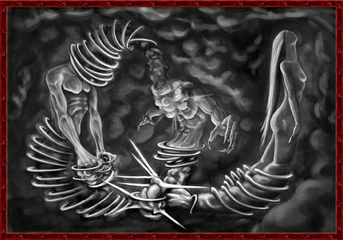

Tibia é um MMORPG desenvolvido pela empresa Cipsoft Criado em 1997, é um dos jogos mais antigos do gênero.
Nele, os jogadores podem desenvolver as habilidades de seus avatares, buscar tesouros, resolver enigmas e explorar áreas como cidades, masmorras, florestas, desertos, ilhas, praias, minas, etc.
Os personagens podem disputar lutas entre si ou com criaturas, tais como monstros, dragões, demônios, orcs, utilizando armas e magias.
Ao iniciar o jogo, o seu avatar começa na ilha de Dawnport, uma ilha onde todo jogador deve permanecer até desenvolver habilidades necessárias para o progresso e sobrevivência nos outros mapas do jogo.
Quando o jogador atinge o nível 8, ele pode, opcionalmente, escolher a sua vocação e deixar a ilha. Em Dawnport, o jogador familiariza-se com o jogo e aprende muitas coisas sobre o mundo de Tibia, como magia ou usar flechas e espadas.
No começo havia somente um grande vácuo. Que estava em todo lugar e em lugar algum.
Neste vazio, duas entidades poderosas apareceram, entidades que eventualmente seriam conhecidas como os deuses anciões: Fardos, o Criador, e Uman Zathroth, que combinava em si mesmo duas metades diferentes.
Uma dessas metades era Uman o Sábio, um deus bondoso que foi presenteado com um intelecto divino, enquanto Zathroth o Destruidor era sua metade perversa.
Estas eram as duas metades de uma mesma entidade enigmática, e mesmo cada uma destas metades sendo perfeitamente capaz de agir por conta própria independente da outra, independentes elas não eram.
Elas foram unidas por um laço eterno que não poderia ser quebrado, e seus destinos são um.
Ninguém sabia de onde os deuses anciões vieram, ou se eles sempre existiram e eventualmente acordaram no berço do infinito.
Mas em algum momento eles decidiram criar um universo.
Certamente Fardos foi quem iniciou tudo, pois ele é guiado por uma necessidade de dar vida.
Ele estava sobrecarregado com um poder criativo e impaciente para liberá-lo, então ele adentrou na existência e começou a liberar seus poderes.
Porém nenhuma de suas tentativas de criar tivera sucesso. Todas as suas criações foram engolidas pelo vácuo antes mesmo de serem completadas, e nenhuma sobreviveu.
Uman Zathroth observou cuidadosamente as realizações de Fardos. Uman era sagaz, e possuía incríveis poderes mágicos.
Mais importante, porém, ele era guiado por uma insaciável fome de conhecimento e iluminação.
Em sua essência era semelhante a Fardos trabalhando abertamente e logicamente, o domínio de Uman era um mundo de mistérios.
Ainda assim, ele que compartilhava com Fardos o interesse na criação, enquanto sua metade sombria Zathroth estava essencialmente corruptiva.
Zathroth era um deus presunçoso que percebia que seus poderes criativos eram pobres.
Por isso olhava para o trabalho de criação de Fardos com inveja, e desde o início ele planejava impedir ou, ao menos, corromper de qualquer forma que pudesse o trabalho de Fardos.
Fardos, que nada suspeitava, pediu o auxílio de Zathroth na criação porque ele aceitava o fato de que sozinho não era capaz de terminar a criação, é claro que Zathroth recusou.
Uman porém aceitou ajudar. E a partir daí ele e Fardos trabalharam juntos no grande projeto que era a criação.

Infelizmente, seus esforços combinados não tiveram mais sucesso que antes, tudo o que Fardos e Uman criavam era engolido pelo vácuo assim que começava a existir, e os dois deuses tristemente viam suas criações escorrer como água entre seus dedos.
Por outro lado Zathroth que observava seus esforços com desconfiança e raiva contida, ridicularizou os esforços de Uman e Fardos.
Entretanto sua alegria transformou-se em surpresa e raiva quando notou que algo estranho estava acontecendo, algo que nem Uman nem Fardos esperam.
Nesse dia ninguém sabe o que aconteceu exatamente, talvez o poder gasto na criação atraiu outra entidade do vácuo, ou pode ser que simplesmente acordou uma outra entidade divina de seu sono.
Alguns ainda dizem que de um modo misterioso, o poder gasto por Uman e Fardos criaram uma nova entidade.
Seja qual for a verdade, uma nova deusa saiu do vácuo como uma sereia recém-nascida de sua concha.
Os deuses anciões maravilhados assistiram àquela beleza divina com grande admiração.
Pois tudo nela estava em perfeita harmonia.
Eles concordaram em chamá-la de Tibiasula.
Zathroth porém se consumia em ódio silencioso.
Mas astuto como era, escondeu bem seu ressentimento e fez parecer que partilhava da mesma alegria dos outros deuses anciões.